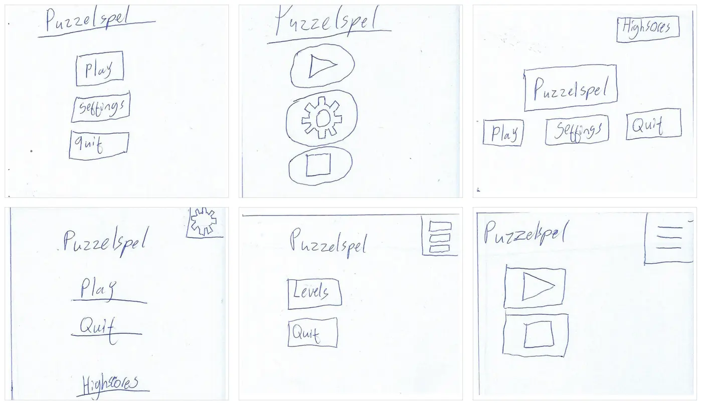

projecten / puzzelspel
Puzzelspel in WPF
Het eerste project van HBO ICT draaide om gebruikersinteractie: een 2D-game bouwen in C# en WPF voor een echte klant en een vaste doelgroep. Het spel moest niet alleen werken, maar ook prettig en begrijpelijk zijn voor de speler.
- periode
- Jaar 1, periode 1
- vorm
- Groepsproject
- techniek
- C#, WPF, Figma
- doelgroep
- Spelers van 30–50 jaar
De opdracht
We kregen een klant en een doelgroep: spelers van 30 tot 50 jaar. In bijna wekelijkse klantarena's (een soort interview met de hele klas en de klant) haalden we de wensen op. Al in de eerste sessie bleek dat de klant van stripboeken houdt en een stripboekenwebsite beheert. Daarom kreeg het spel een stripboekenthema.
We werkten volgens design thinking: empathize, define, ideate, prototype en test & improve.
Empathize: wat wil de speler?
Ik hield een semigestructureerd interview met iemand uit de doelgroep. Ik had vragen voorbereid, maar kon ook doorvragen. Daardoor kwamen er duidelijke inzichten uit:
- Puzzelspellen zijn favoriet, maar tijdsdruk is de grootste afknapper.
- Korte levels van zo'n vijf minuten, zodat je zelf bepaalt hoe lang je speelt.
- Liever een rustig tempo dan snelle reflexen.
- Humor maakt een spel leuker.
Define: user stories
De antwoorden uit het interview en de klantarena's vertaalde ik naar user stories volgens het format Als … wil ik … zodat …. Ik maakte acht stories voor de gebruiker en zes voor de klant. Een paar voorbeelden:
| id | user story |
|---|---|
G3 | Als gebruiker wil ik korte spelmomenten hebben, zodat ik mijn speeltijd flexibel kan indelen. |
G8 | Als gebruiker wil ik geen tijdsdruk ervaren, zodat ik ontspannen kan blijven spelen. |
K2 | Als klant wil ik dat de moeilijkheidsgraad aanpasbaar is, zodat het spel past bij verschillende spelers. |
K6 | Als klant wil ik dat de besturing eenvoudig is, zodat de game voor iedereen toegankelijk blijft. |
Ook maakte ik een stakeholderanalyse. Daaruit bleek een spanningsveld: de gebruiker wil geen druk, de klant wil juist een uitdagend spel. De kunst was om daar een balans in te vinden.
Ideate: 6-to-1
Voor het beginscherm gebruikte ik de 6-to-1-methode: in vijf minuten zes verschillende schetsen maken, per schets de voor- en nadelen opschrijven en daarna de beste kiezen.


Ik koos een rustige, verticale indeling met tekstknoppen. Voor deze doelgroep is Play duidelijker dan alleen een ▶-icoon. De Highscores-knop uit een andere schets heb ik eronder toegevoegd.
Om ideeën te verzamelen gebruikten we als groep ook een mindmap, de Transporter-methode en brainwriting.
Prototype: Figma en WPF
In Figma maakten we een klikbaar prototype met een beginscherm, een instellingenscherm, levelselectie en twee levels. Elk groepslid werkte één scherm uit. Ik ontwierp onder andere negen gekleurde bolletjes die bij de stripstijl pasten.
Daarna bouwden we het spel in WPF. Je voert je naam in, kiest via de levelselectie een spel en speelt een geheugenspel. Daarin knipperen stripboeken in een steeds langere reeks, die je in dezelfde volgorde moet nadoen.
Testen: drie soorten tests
Ik stelde een testplan op met succescriteria en voerde drie soorten tests uit:
- Monkey tests: op elk scherm willekeurig en snel klikken en typen om crashes te vinden. Een heel lange tekst plakken in het naamveld liet het spel vastlopen. Twee keer op Start klikken liet het crashen.
- Hallway test: iemand zonder uitleg het spel laten spelen. Navigeren ging goed, maar de bedoeling van het spel was niet direct duidelijk. Er ontbrak ook een terugknop.
- Guerrilla test: korte vragen achteraf. Dat leverde eerlijke feedback op, bijvoorbeeld dat bekende stripfiguren makkelijker te onthouden zijn dan stripboekomslagen.
Test & improve
Elke gevonden fout kreeg een concreet verbeterpunt:
| probleem | verbetering |
|---|---|
| Spel loopt vast bij heel lange tekstinvoer | Invoerlimiet op tekstvelden |
| Crash bij meerdere klikken op Start | Startknop uitschakelen na één klik |
| Speler weet niet wat de bedoeling is | Korte uitleg bij de start van het spel |
| Geen terugknop tijdens het spel | Terugknop toevoegen |
| Knipperen niet zichtbaar onder de cursor | Duidelijkere animatie |
Die adviezen onderbouwde ik met de heuristieken van Nielsen. Volgens nummer 9 moeten foutmeldingen in gewone taal zeggen wat er mis is, bijvoorbeeld: "De naam is te lang. Gebruik maximaal 20 tekens." Volgens nummer 10 moet hulp kort zijn en makkelijk te vinden.
Wat ik leerde
- Doorvragen in een interview levert veel meer op dan alleen je lijstje afwerken.
- Observeren zonder in te grijpen laat de echte problemen van een gebruiker zien.
- Technische tests en gebruikerstests vullen elkaar aan. Samen geven ze een compleet beeld.
- Een spel kan technisch werken en toch tegenvallen als de interactie niet past bij de speler.